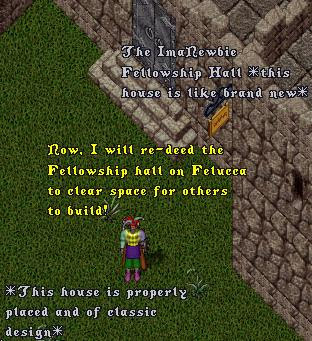
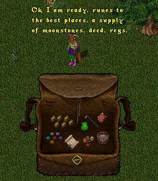
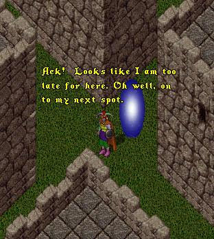
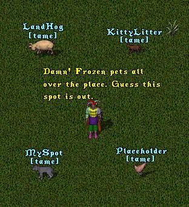
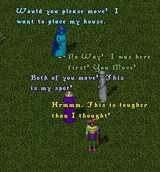
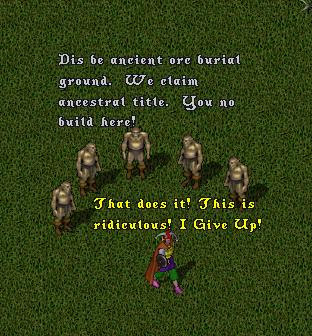
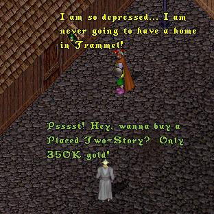
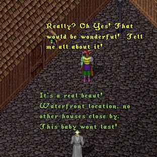
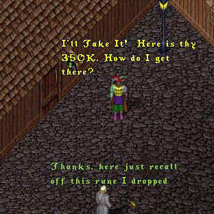
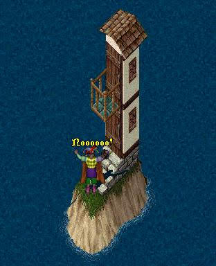

Episode 101: The Great Trammel Land Rush - Once again I must divert from ImaNewbies quest to re-unite with Irma to cover another breaking controversy sweeping our lands ... that of the impending rush to place houses once the new lands of Trammel are opened to settlement. Now any of you reading the boards lately have heard all the dire predictions of pet blocking and other nasty things that will happen so I decided to send Ima out to Trammel to see for himself. Enjoy!
As this episode opens, ImaNewbie is
preparing to head out to the no-PvP
lands of Trammel to place his new dream
home. Being a considerate person, he
first re-deeds the famed Fellowship
Hall, feeling that it is only fair to free
up space for those who need a space in
Felucca to place their home.


After carefully checking his backpack,
ImaNewbie drops a moonstone and gates to the
first spot he has picked out in the new lands.

Oh oh! already taken. Oh well, ImaNewbie
has several more spots picked out and
heads on over to his second choice.

Hrmm, this doth not bode well! Undaunted,
ImaNewbie moves on to his third choice.

Yikes! Surely his next spot will
be free of problems?

Discouraged and disgusted, ImaNewbie gives
up and heads to the Tavern to drown his
sorrows. Just outside the tavern, he is
approached by a stranger who appears to
have a solution to his problem.



Hardly able to contain his excitement,
ImaNewbie utters the immortal words,
"Kal Ort Por", and is whisked off to
his new Dream Home!
